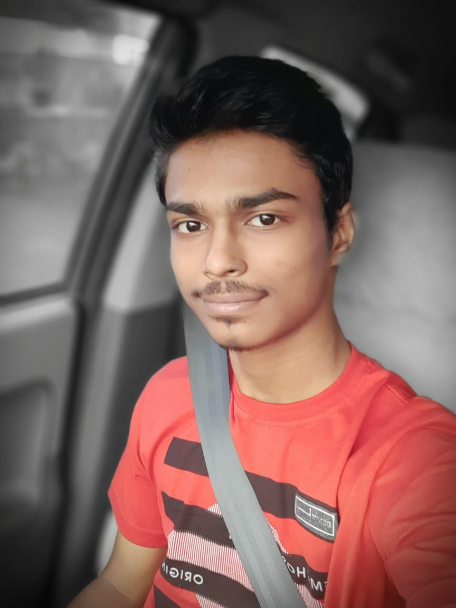

Resume
Siddhesh Sunil Mali
Contact me: +91 8149131523 | Email: sidsmali2207@gmail.com
Hey Guys, MySelf Siddhesh Sunil Mali,I am a Web Developer
Exploring the era of the Website Designing and learning things much more.

About Me
I am from Bhusawal and Currently Pursuing the BTech Degree from Vishwakarma Institute of Information Technology Pune in the Department of Artificial Intelligence and Data Science.
I am a quick learner and always curious to learn the new concepts which helps to develop the designing skills and also helps me to improve my logic and the way of thinking for solving a problem.
Education
- SSC : Tapti Public School, Bhusawal | Percentage: 91.8
- HSC : P.O.Nahata College, Bhusawal | Percentage: 95
- BTech : Vishwakarma Institute of Information Technology, Pune | CGPA: 9.4
Work Experience
- Worked in ABC company for abc Period of time.
- Worked as a Design Head in XYZ Group
- Active member of xyz Club.
Skills
- Java
- MERN
- UI Designing
- UX Designing
- C programming
Achievements
- CCNA Module 1: Introduction to Computer Networks.
- Java Programming MCCE Certified.
- C/C++ Programming MCCE Certified.
- Inforsys SpringBoard : Network and Web Technology.
- Complete Web Development Bootcamp by Dr.Angela Yu
Extra
- Represented College Cricket team.
- Visharad Purn From Gandharva Mahavidyalaya, Mumbai.
- Like to Play Cricket, Sing Songs, Play Percussions.